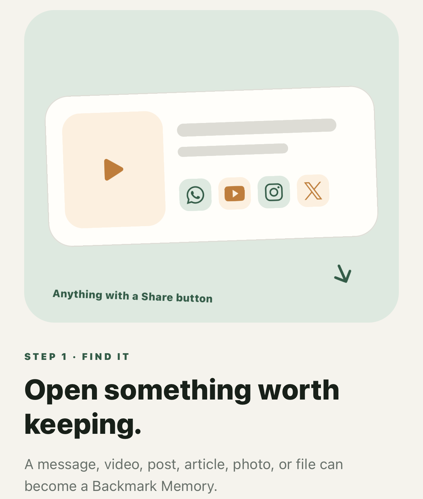
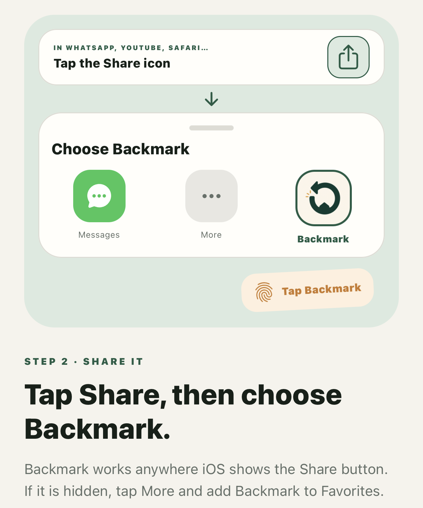
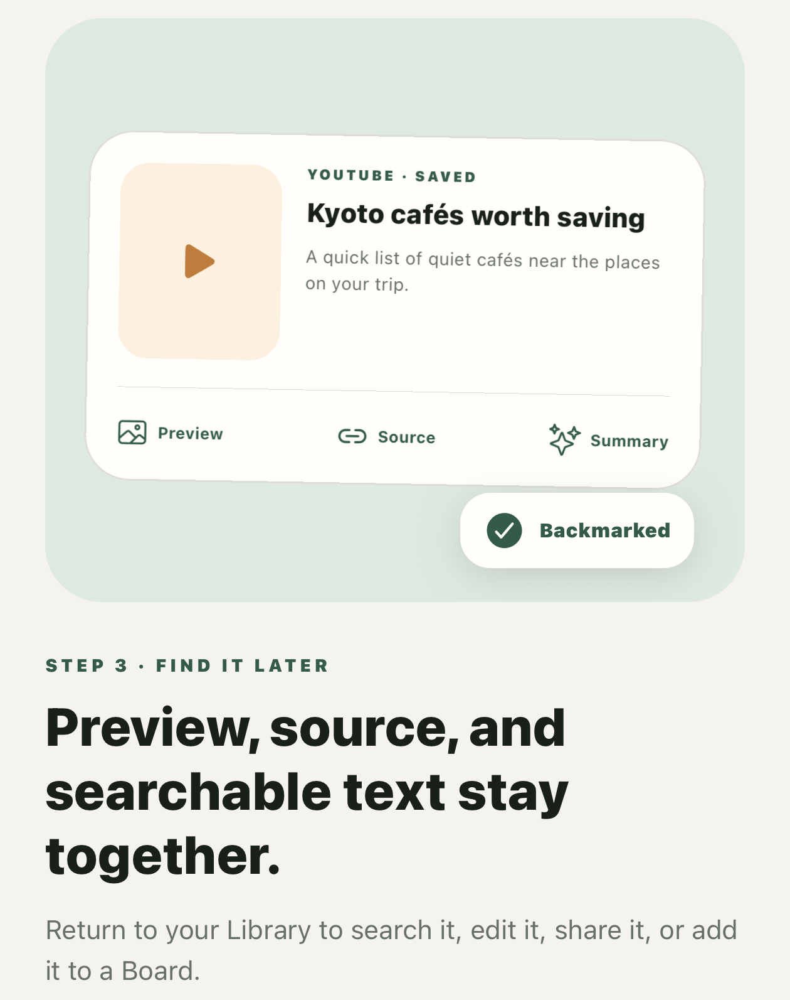
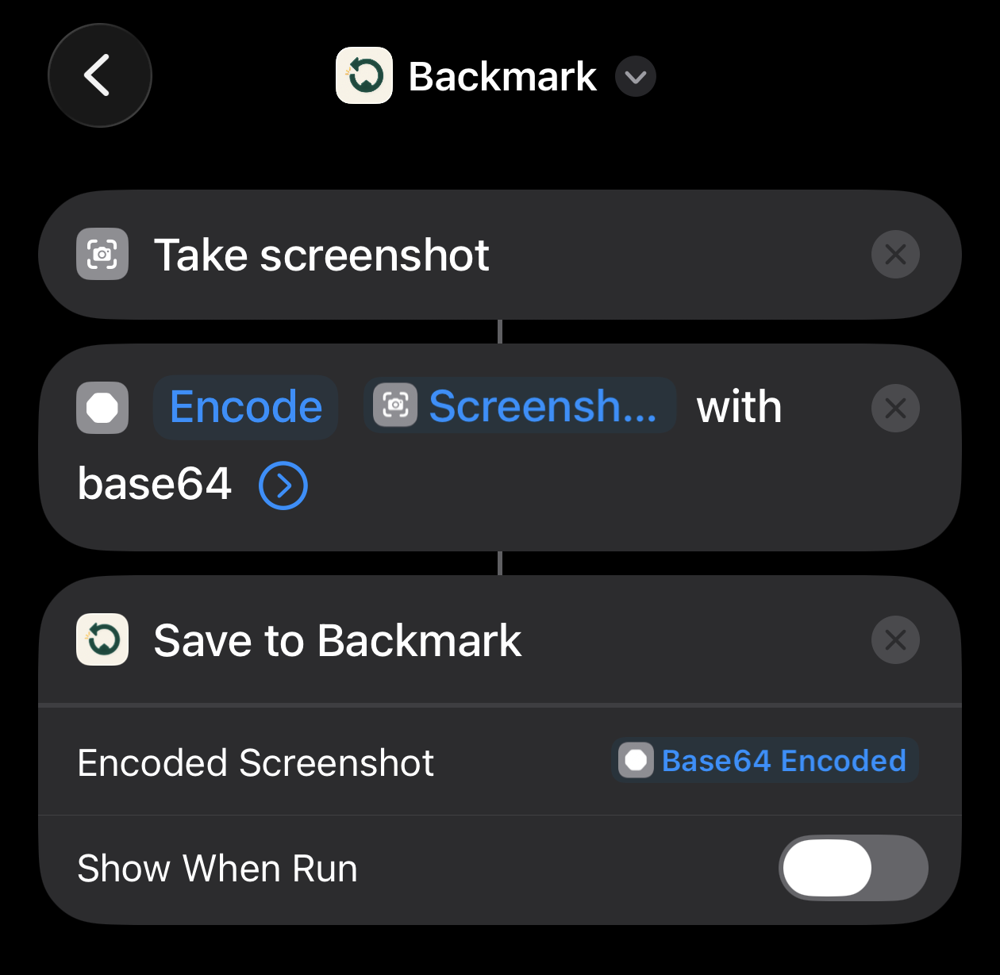

01
How to save
- Open a link, image, video, post, or file in another app.
- Tap the iOS Share button and choose Backmark. If it is hidden, tap More and add Backmark to Favorites.
- In the Backmark Share sheet, choose Library, one of your Boards, or + New Board. You can also pick a topic, or leave “Sort for me” selected. Then tap Save. Memories saved to a Board also appear in your Library. Tap Cancel at the top to leave without saving.
- Return to Backmark and find the new Memory in your Library.
If you share a Backmark export zip or a browser bookmarks file to Backmark, it shows you how to restore or import it instead of saving it as a Memory.
-

Step 1 Open something worth keeping. -

Step 2 Tap Share, then choose Backmark. -

Step 3 Find the saved Memory in your Library.
02
Saving a screenshot with Back Tap
APPLE SHORTCUTS
Start in the Shortcuts app
Open Apple’s Shortcuts app and build the “Remember Screen” shortcut shown below. If you cannot find the app, search your App Library for “Shortcuts.”
Then assign “Remember Screen” to Double Tap or Triple Tap in iPhone Settings. When it runs, Backmark stores the screenshot as the Memory preview and recognizes visible text on the device so it can be searched.
See Apple’s Back Tap instructions →

03
Your Library home and tiles
The Library opens on a home screen. Search everything at once, open a “Where it’s from” tile (websites, YouTube, Instagram, Threads, Facebook, X, files, or Places) to see saves from that source, or tap a topic chip. Your three newest Memories appear below, with “See all” for the full list.
To make your own tile, tap “New tile,” give it a name, and add a few match words separated by commas. A Memory shows in the tile when any of those words appears in it. Pick a symbol, or, with Apple Intelligence turned on, make an icon with Image Playground.
04
Importing bookmarks
- Export your bookmarks as an .html file from Safari, Chrome, Firefox, or Edge, and put it on your iPhone with AirDrop or the Files app.
- In Backmark, tap + Add, then “Import bookmarks,” and choose the file.
- Choose the folders to import, then choose “Sort by folder,” or let Apple Intelligence sort them on your iPhone. Only each bookmark’s title, site, and folder name are read. Pages are never opened.
- Move any link or rename a category before you close.
Links left in “Web bookmarks” can be sorted later from the Library.
05
Places and routes
Share an Apple Maps or Google Maps link to Backmark to save it as a place, or open any Memory and tap “Add a place.” Place search uses Apple Maps with only the words you type, never your location, and Backmark never asks for location permission. A Google Maps short link is resolved by asking Google only for its first redirect, without loading a page.
A Board with two or more places shows a planned route. Put the stops in the order you want and choose walk or drive. Only the stops’ coordinates go to Apple Maps for directions. It is a plan, not a record of where you went.
06
Share a Board as images
Open a Board and tap Share to see it as a swipeable set of images. Pick one of five colour themes. Share sends the images together with every original link, and Download saves the images to Photos. Backmark asks only to add photos, so it can’t see your photo library.
07
Ask this Board and Board covers
On compatible iPhones with Apple Intelligence turned on, open a Board and choose “Ask this Board” to get answers that use only the Memories in that Board, with numbered sources you can open. If the Board doesn’t contain the answer, Backmark says so instead of guessing. Choose “Create cover” to pick a scene and style, edit the description, and continue to Apple’s Image Playground. You can turn these features on or off in Profile under On-device AI. Saving, text recognition, and search work on every supported iPhone, with or without Apple Intelligence.
08
A source will not preview
Some websites prevent embedded previews. Your source link remains available, and you can open it in the original website or app.
A saved link only points to the original. If the original is deleted or made private, the link stops opening, but what Backmark saved stays on your iPhone.
09
Searchable screenshot text
Backmark uses Apple’s on-device text recognition for saved screenshots and images. Recognition can vary with image quality, text size, language, and contrast.
10
Exporting, restoring, and deleting data
Choose “Export all local data” in Profile to create one zip file with a readable Backmark.html page, a backmark-data.json file, and folders with your photos, files, Board covers, map pictures, and tile icons. Send or save it with the iOS share sheet. Original links are kept.
To restore, tap + Add, then “Restore a Backmark export,” and choose the zip. Restoring adds only what is missing and never deletes or overwrites anything.
Delete one Memory from its detail screen, select several with “Select” in the Library, or choose “Delete all local data” in Profile. Deleting a Board does not delete its Memories.
11
Purchase and re-download
Backmark is a one-time App Store purchase with no subscription. To install it again on another compatible device, use the same Apple Account and download it from your App Store purchase history.